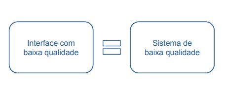
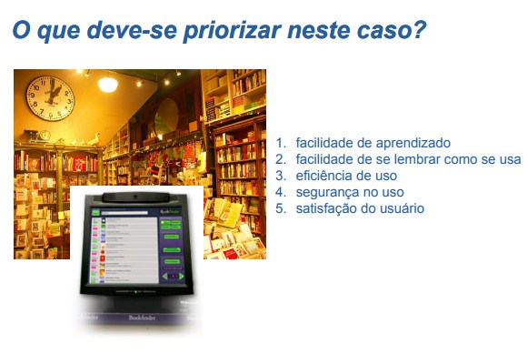
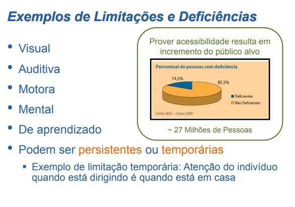

Qualidade em IHC
O que significa usar um sistema interativo?
- Interagir com sua interface para alcançar objetivos em determinado contexto de uso
O que se deseja da interação e da interface?
- Que sejam adequadas
- Que permitam aproveitar ao máximo o apoio Que permitam aproveitar ao máximo o apoio computacional
Ser adequado significa ter qualidade!
Interfaces de Baixa Qualidade
Requerem treinamento excessivo.
Desmotivam a exploração.
Confundem os usuário.s
Induzem os usuários ao erro.
Geram insatisfação.
Diminuem a produtividade.
Não trazem o retorno de investimento previsto.
Ponto de Vista do Usuário

Critérios de Qualidade
Usabilidade.
Experiência do usuário.
Acessibilidade.
Comunicabilidade.
Usabilidade
Critério de qualidade relacionado com:
Facilidade de aprendizado Facilidade de aprendizado (mede-se tempo e esforço) se tempo e esforço)
Facilidade de recordação (pistas na interface ajudam)
Eficiência (influência tempo de conclusão da atividade)
Segurança no uso (evitar problemas e se recuperar)
Satisfação do usuário por decorrência do uso (funcionou? gostou? divertiu (funcionou? gostou? divertiu-se?)
Usabilidade provê meios produtivos para realizar tarefas

Norma ISO/IEC 9126 (1991)
Norma para qualidade de produto de software
Definição de usabilidade:
“Um conjunto de atributos relacionados com os esforços necessários para o uso de um sistema interativo, e relacionados com a avaliação individual de tal uso, por um conjunto específico de usuários”
Notem a ênfase no esforço e na satisfação!
Norma ISO/IEC 9241-11 (1998)
Norma para requisitos de ergonomia
Definição de usabilidade:
“O grau em que um produto é usado por usuários específicos para atingir objetivos com eficácia, eficiência em um contexto de uso específico”.
Eficácia está relacionada com a capacidade dos usuários de alcançar objetivos corretamente
Eficiência está relacionada recursos necessários
Experiência do Usuário
Determina o sucesso comercial de um produto
Determina a produtividade dos usuários
Determina as oportunidades de mudança de comportamentos, práticas, crenças, disposições, de indivíduos e grupos
Determina a formação de grupos de usuários que...
... conseguem e que não conseguem.
... sabem e que não sabem.
... podem e que não podem, etc.
Exemplos de Determinação da Experiência do Usuário
1. Aplicações disponíveis para uma única plataforma
Divide os usuários entre os que podem e os que não podem usá-las.
2. Aplicações multiplataforma, com interface não customizável
Divide os usuários entre os que conseguem e os que não conseguem usá-las.
3. Toda aplicação, independente de em quantas plataformas está disponível ou quantas interfaces alternativas oferece
Divide os usuários entre os que gostam e os que não gostam dela
Esses casos de divisão podem ser um problema?
Sim, se o que a aplicação faz é algo que todo cidadão tem de fazer ou deveria poder fazer.
Não, se o que a aplicação faz é um produto ‘facultativo’ na sociedade.
Acessibilidade
Critério de qualidade relacionado com:
Não discriminar Não discriminar usuários usuários-alvo com necessidades alvo com necessidades especiais.
Ausência de barreiras na interação.
Igual importância a pessoas com e sem limitações.
Permite ao usuário empregar, na interação,...
... sua habilidade motora.
... seus sentidos e capacidade de percepção.
... sua capacidade cognitiva.
Exemplos de Limitações e Deficiências

Acessibilidade na Web
W3C: World Wide Web Consortium
Comunidade internacional que trabalha no desenvolvimento de padrões Web
Site: http://www.w3.org/
WCAG: Web Content Accessibility Guidelines
Recomendações para propostas pela W3C para tornar o Recomendações para propostas pela W3C para tornar o conteúdo da Web mais acessível
Site da versão 2.0: http://www.w3.org/TR/WCAG20/
Comunicabilidade
Critério de qualidade relacionado com:
Expressar bem a intenção e a lógica de design dos produtores do sistema
Permitir ao usuário expressar bem a sua intenção de uso
Responder às expressões do usuário com comunicações úteis e adequadas ao contexto de uso
Lógica de Design
A lógica de design comunica ao usuário
A quem se destina o sistema
Para que serve o sistema
Qual a vantagem de utilizá-lo
Como o sistema funciona
Compreeder a lógica de design
Não implica em adquirir conhecimento técnico de design
Implica em tirar melhor proveito da tecnologia
Ex.: o uso de um automóvel não requer conhecer de sua mecânica
Recursos que Favorecem a Comunicabilidade
Uso de analogias
Exemplo: media players, lixeira
Oferecer mais informação conforme a demanda
Exemplo: dicas em sistema recém instalados
Fornecer ajuda de fácil acesso
Exemplo: Dicas sobre botões no
Microsoft Office® XP: apenas nome do botão
Microsoft Office® 2007: descrição completa da funcionalidade